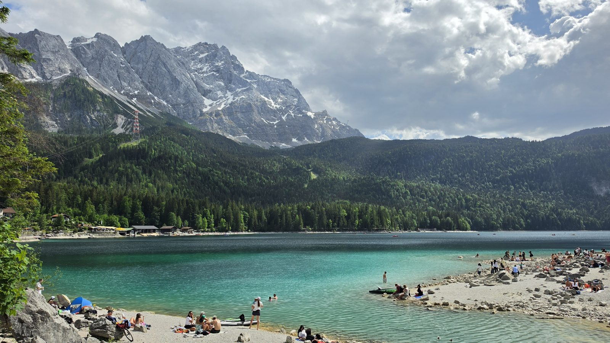
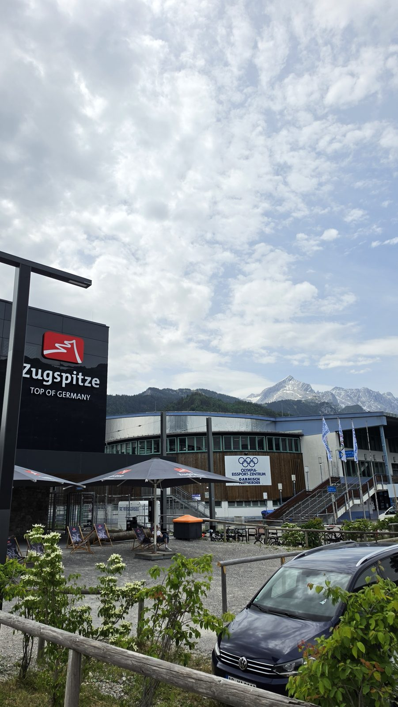
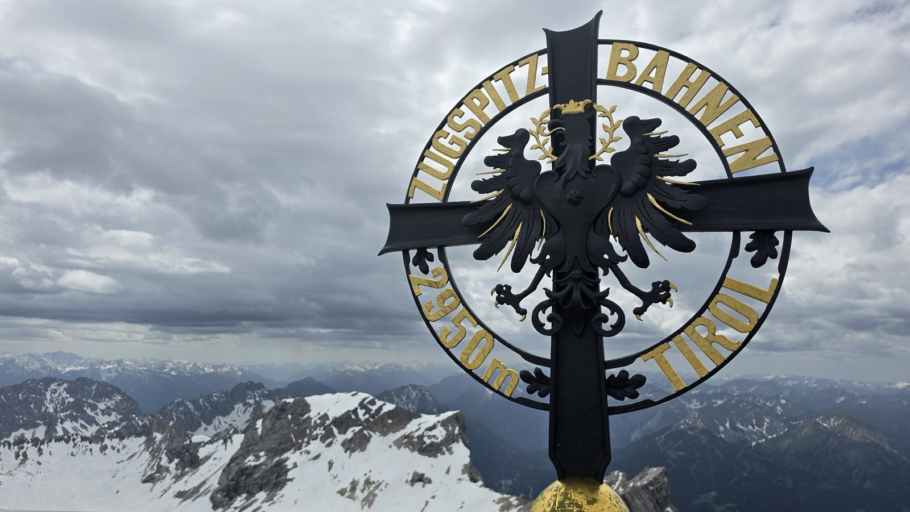
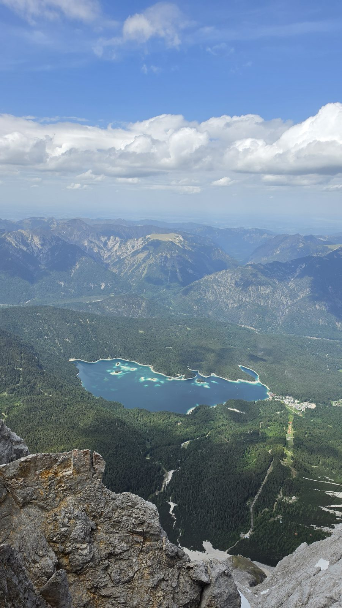
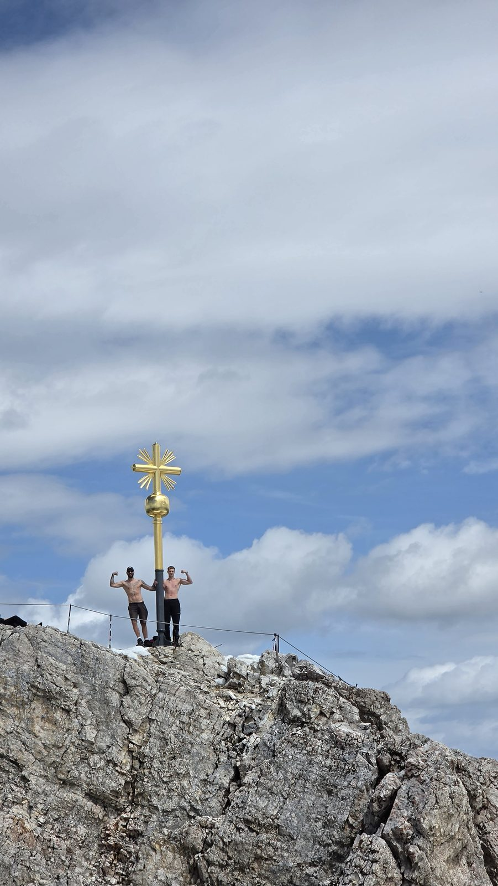
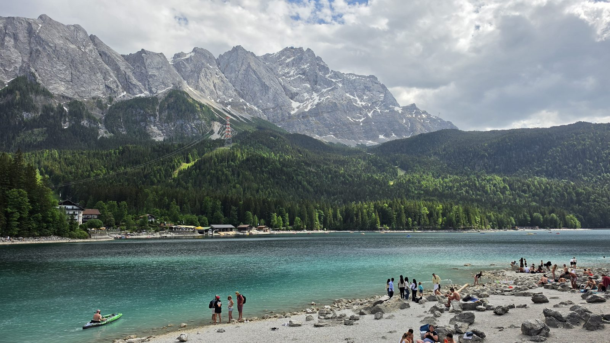

<meta charset="utf-8">
<title>추크슈피체와 아이브제 — 오후 두 시엔 눈, 네 시엔 물</title>
<meta name="description" content="독일 최고봉 추크슈피체(2,962m)와 그 아래 아이브제. 2026년 5월 30일 하루 동안 오른 기록과, 올라가는 세 가지 길·표고차 2,000m가 만드는 온도차 같은 실제로 필요한 정보를 정리했습니다.">
<meta name="viewport" content="width=device-width, initial-scale=1">
<link rel="canonical" href="https://danielmoon82.github.io/moon/posts/zugspitze.html">
<meta property="og:type" content="article">
<meta property="og:title" content="추크슈피체와 아이브제 — 오후 두 시엔 눈, 네 시엔 물">
<meta property="og:description" content="독일 최고봉 2,962m 정상에서 두 시간 만에 청록색 호수로. 하루에 계절 두 개를 지난 기록.">
<meta property="og:image" content="https://danielmoon82.github.io/moon/posts/images/zugspitze-eibsee-2.jpg">
<link rel="preconnect" href="https://fonts.googleapis.com">
<link rel="preconnect" href="https://fonts.gstatic.com" crossorigin>
<link rel="stylesheet" href="https://fonts.googleapis.com/css2?family=Hahmlet:wght@400;600;800&family=IBM+Plex+Mono:wght@400;500&family=IBM+Plex+Sans+KR:wght@300;400;500;600&display=swap">

<style>
  :root{
    --paper:#E7EBF1;
    --surface:#F4F6FA;
    --surface-2:#DCE2EC;
    --ink:#0F1729;
    --ink-2:#3D4A63;
    --ink-3:#6B7891;
    --line:#C6CEDB;
    --line-soft:#D6DCE6;
    --accent:#B06A15;
    --accent-bright:#C2761A;
    --accent-soft:rgba(176,106,21,.11);

    --f-display:"Hahmlet",'Nanum Myeongjo',"Apple SD Gothic Neo",serif;
    --f-body:"IBM Plex Sans KR","Apple SD Gothic Neo","Malgun Gothic",sans-serif;
    --f-mono:"IBM Plex Mono","SFMono-Regular",Consolas,monospace;

    --pad:clamp(20px,5vw,64px);
  }
  @media (prefers-color-scheme:dark){
    :root:not([data-theme="light"]){
      --paper:#0B1120;
      --surface:#121A2C;
      --surface-2:#1A2439;
      --ink:#E9EEF7;
      --ink-2:#A9B5C9;
      --ink-3:#72809A;
      --line:#26314A;
      --line-soft:#1D2739;
      --accent:#E8A33D;
      --accent-bright:#F0B45C;
      --accent-soft:rgba(232,163,61,.13);
    }
  }
  :root[data-theme="dark"]{
    --paper:#0B1120;
    --surface:#121A2C;
    --surface-2:#1A2439;
    --ink:#E9EEF7;
    --ink-2:#A9B5C9;
    --ink-3:#72809A;
    --line:#26314A;
    --line-soft:#1D2739;
    --accent:#E8A33D;
    --accent-bright:#F0B45C;
    --accent-soft:rgba(232,163,61,.13);
  }

  /* 글자 기준 크기. 홈과 같은 값. */
  html{font-size:18px;}
  *{box-sizing:border-box;}
  body{
    margin:0;
    background:var(--paper);
    color:var(--ink);
    font-family:var(--f-body);
    font-weight:300;
    font-size:1rem;
    line-height:1.75;
    -webkit-font-smoothing:antialiased;
  }
  a{color:inherit;}
  :focus-visible{outline:2px solid var(--accent-bright);outline-offset:3px;border-radius:2px;}
  img{max-width:100%;height:auto;}

  .wrap{max-width:720px;margin:0 auto;padding-inline:var(--pad);}

  .nav{
    position:sticky;top:0;z-index:20;
    background:color-mix(in srgb, var(--paper) 88%, transparent);
    backdrop-filter:saturate(180%) blur(12px);
    border-bottom:1px solid var(--line);
  }
  .nav-in{display:flex;align-items:center;justify-content:space-between;gap:20px;height:58px;}
  .brand{
    font-family:var(--f-display);
    font-weight:600;font-size:1rem;letter-spacing:-.02em;
    text-decoration:none;color:var(--ink);
  }
  .back{
    font-family:var(--f-mono);
    font-size:.72rem;letter-spacing:.06em;
    color:var(--ink-3);text-decoration:none;
  }
  .back:hover{color:var(--accent);}

  .article{padding-block:clamp(40px,7vw,72px) clamp(56px,9vw,96px);}
  .eyebrow{
    font-family:var(--f-mono);
    font-size:.68rem;letter-spacing:.16em;text-transform:uppercase;
    color:var(--accent);margin:0 0 14px;
  }
  h1{
    font-family:var(--f-display);
    font-weight:800;font-size:clamp(1.7rem,4.6vw,2.5rem);
    line-height:1.28;letter-spacing:-.03em;
    margin:0 0 16px;
  }
  .lede{margin:0 0 10px;font-size:1rem;color:var(--ink-2);}
  .byline{
    font-family:var(--f-mono);font-size:.72rem;color:var(--ink-3);
    padding-bottom:26px;border-bottom:1px solid var(--line);margin-bottom:34px;
  }

  .hero{
    width:100%;border-radius:4px;border:1px solid var(--line-soft);
    margin-bottom:38px;display:block;
  }

  h2{
    font-family:var(--f-display);
    font-weight:600;font-size:1.3rem;letter-spacing:-.02em;
    margin:46px 0 14px;
  }
  p{margin:0 0 18px;color:var(--ink-2);}
  .article strong{color:var(--ink);font-weight:600;}

  .spec{
    list-style:none;margin:0 0 22px;padding:20px clamp(16px,3vw,24px);
    border:1px solid var(--line);border-radius:3px;background:var(--surface);
  }
  .spec li{
    display:flex;gap:14px;padding:7px 0;
    border-bottom:1px solid var(--line-soft);
    font-size:.92rem;color:var(--ink-2);
  }
  .spec li:last-child{border-bottom:0;}
  .spec b{
    flex:0 0 88px;font-weight:500;color:var(--ink-3);
    font-family:var(--f-mono);font-size:.74rem;letter-spacing:.04em;
    padding-top:3px;text-transform:uppercase;
  }

  ul.bullets{margin:0 0 20px;padding-left:20px;color:var(--ink-2);}
  ul.bullets li{margin-bottom:8px;}

  figure{margin:32px 0;}
  figure img{border-radius:4px;border:1px solid var(--line-soft);display:block;}
  figcaption{
    margin-top:10px;font-family:var(--f-mono);font-size:.7rem;
    color:var(--ink-3);text-align:center;
  }

  .callout{
    margin:30px 0;padding:18px clamp(16px,3vw,22px);
    border-left:3px solid var(--accent);
    background:var(--accent-soft);border-radius:0 3px 3px 0;
  }
  .callout p{margin:0;font-size:.9rem;color:var(--ink-2);}

  .foot{
    border-top:1px solid var(--line);background:var(--surface);
    padding-block:32px 40px;margin-top:20px;
  }
  .foot p{margin:0;font-size:.8rem;color:var(--ink-3);}
  .foot .sig{
    font-family:var(--f-display);font-weight:600;font-size:1rem;
    color:var(--ink);letter-spacing:-.02em;margin-bottom:4px;
  }
</style>

<nav class="nav">
  <div class="wrap nav-in">
    <a class="brand" href="../index.html">나의 투자 그리고 행복한 여행</a>
    <a class="back" href="../index.html#travel">← 목록으로</a>
  </div>
</nav>

<main class="wrap article">
  <p class="eyebrow">Travel · Germany</p>
  <h1>추크슈피체와 아이브제<br>오후 두 시엔 눈, 네 시엔 물</h1>
  <p class="lede">독일에서 가장 높은 곳에 눈이 남아 있었고, 두 시간 뒤 그 산이 비친 호수에서 사람들이 헤엄치고 있었습니다.</p>
  <p class="byline">2026.05.30 · 독일 바이에른 · 추크슈피체 2,962m</p>

  

  <h2>어디인가</h2>
  <p><strong>추크슈피체</strong>는 해발 2,962m로 독일에서 가장 높은 산입니다. 정상이 독일과 오스트리아
  국경 위에 걸쳐 있어서 양쪽 전망대를 오갈 수 있습니다. 산 아래 <strong>아이브제</strong>는 해발
  973m쯤에 있는 호수입니다.</p>
  <p>둘 사이 표고차가 <strong>약 2,000m</strong>입니다. 이 숫자가 이 여행의 전부입니다.
  같은 날 같은 자리에서 눈과 물을 다 봅니다.</p>

  <h2>그날의 시간표</h2>
  <p>아래 시각은 사진에 기록된 촬영 시각입니다.</p>
  <ul class="spec">
    <li><b>11:58</b><span>가르미슈파르텐키르헨 계곡역 출발</span></li>
    <li><b>14:13</b><span>정상 도착 — 티롤 쪽 표지판</span></li>
    <li><b>14:35</b><span>정상에서 아이브제를 내려다봄</span></li>
    <li><b>14:45</b><span>황금 십자가</span></li>
    <li><b>16:11</b><span>아이브제 호숫가</span></li>
  </ul>
  <p>계곡역에서 정상까지 두 시간 남짓, 정상에서 호수까지 한 시간 반 정도 걸린 셈입니다.
  넉넉히 잡아도 하루면 됩니다.</p>

  <h2>11:58 — 출발</h2>
  <figure>
    
    <figcaption>가르미슈파르텐키르헨 계곡역. 바로 옆이 올림피아 아이스링크입니다.</figcaption>
  </figure>
  <p>산 이름 아래 <strong>TOP OF GERMANY</strong>라고 적혀 있습니다. 과장이 아니라 사실 그대로입니다.
  이 자리에서 톱니바퀴 열차를 타면 산속 터널을 지나 추크슈피체플라트까지 올라가고,
  거기서 빙하 케이블카로 갈아타면 정상입니다.</p>

  <h2>14:13 — 정상</h2>
  <figure>
    
    <figcaption>티롤 쪽 표지판. 2,950m는 오스트리아 케이블카 승강장 높이입니다.</figcaption>
  </figure>
  <p>쌍두 독수리는 티롤 문장입니다. 이 표지판이 서 있다는 건 이미 국경 위라는 뜻입니다.
  5월 말인데 능선에 눈이 그대로 남아 있습니다. 뒤로 보이는 건 오스트리아 쪽 알프스입니다.</p>

  <h2>14:35 — 위에서 본 호수</h2>
  <figure>
    
    <figcaption>정상에서 아이브제. 두 시간 뒤에 저 물가에 앉게 됩니다.</figcaption>
  </figure>
  <p>호수 안에 섬이 몇 개 떠 있는 게 여기서만 보입니다. 물빛이 이렇게 나오는 건 산에서 내려온
  잘게 갈린 석회 가루가 물에 떠 있어 빛을 흩기 때문입니다. 알프스 호수가 대개 이 색입니다.</p>

  <h2>14:45 — 황금 십자가</h2>
  <figure>
    
    <figcaption>정상 황금 십자가. 처음 세워진 건 1851년입니다.</figcaption>
  </figure>
  <p>웃통을 벗고 있는 사람들이 보입니다. <strong>3,000m 가까운 곳인데 그랬습니다.</strong>
  맑은 날 한낮에는 이렇게 되기도 하지만, 같은 자리에서 구름이 들어오면 순식간에 바뀝니다.
  바로 앞 사진의 능선에 눈이 남아 있는 것도 같은 날입니다.</p>

  <h2>16:11 — 호수</h2>
  <figure>
    
    <figcaption>한 시간 반 전에 서 있던 봉우리가 건너편에 있습니다.</figcaption>
  </figure>
  <p>카약을 타고, 물에 들어가고, 자갈밭에 앉아 있습니다. 건너편에 아까 그 산이 그대로 서 있고
  거기엔 아직 눈이 있습니다. <strong>한 사진 안에 눈과 수영이 같이 들어옵니다.</strong>
  이게 이 코스의 전부이고, 다른 데서 잘 안 나오는 장면입니다.</p>

  <h2>올라가는 길은 세 가지</h2>
  <ul class="spec">
    <li><b>톱니바퀴 열차</b><span>가르미슈파르텐키르헨에서 출발해 산속 터널을 지나 추크슈피체플라트까지.
      거기서 빙하 케이블카로 갈아탑니다. 오래 걸리지만 창밖이 볼거리입니다.</span></li>
    <li><b>아이브제 케이블카</b><span>호수에서 정상까지 한 번에 올라갑니다. 2017년 12월에 새로 놓였고,
      중간 지주 없이 건너뛰는 구간이 약 3,213m로 개통 당시 세계 기록이었습니다.
      지주 하나 높이가 127m입니다.</span></li>
    <li><b>티롤 케이블카</b><span>오스트리아 에어발트 쪽에서 올라옵니다. 정상 표지판의 2,950m가 이쪽입니다.</span></li>
  </ul>
  <p>올라갈 때와 내려올 때 다른 길을 쓰면 한 번에 다 봅니다. 이 사진들도 그렇게 찍혔습니다 —
  가르미슈에서 열차로 올라가 케이블카로 아이브제에 내렸습니다.</p>

  <h2>가기 전에 알아둘 것</h2>
  <ul class="bullets">
    <li><strong>옷은 한 겹 더.</strong> 표고차가 2,000m입니다. 산에서는 보통 100m 올라갈 때마다
      기온이 0.6도쯤 떨어지므로, 계곡이 25도여도 정상은 13도 안팎입니다. 바람이 불면 더 낮게 느껴집니다.</li>
    <li><strong>날씨를 보고 날짜를 고르세요.</strong> 구름이 정상을 덮으면 아무것도 안 보입니다.
      돈과 시간을 다 쓰고 흰 벽만 보는 일이 생깁니다. 산 날씨는 하루 전에도 바뀝니다.</li>
    <li><strong>호수를 일정에 꼭 넣으세요.</strong> 정상만 찍고 내려오면 절반만 본 겁니다.
      아이브제 둘레길이 약 7km라 두 시간쯤이면 한 바퀴 돕니다.</li>
    <li><strong>여권을 챙기면 마음이 편합니다.</strong> 정상에서 오스트리아 쪽으로 넘어갈 수 있습니다.
      국경 검문이 상시로 있는 구간은 아니지만 국경은 국경입니다.</li>
    <li><strong>요금과 운행 시간은 떠나기 전에 확인하세요.</strong> 계절마다 다르고 정비로 쉬는 날도 있습니다.</li>
  </ul>

  <div class="callout">
    <p>가장 좋았던 건 정상도 호수도 아니라 <strong>그 사이의 두 시간</strong>이었습니다.
    눈 옆에 서 있다가 물가에 앉기까지 걸린 시간입니다. 하루에 계절 두 개를 지나는 곳은 흔하지 않습니다.</p>
  </div>

  <p class="byline">이 글의 시각은 사진에 남은 촬영 기록에서 가져왔습니다. 요금·운행 시간처럼
  바뀌는 정보는 넣지 않았으니 공식 안내를 확인하세요.</p>
</main>

<footer class="foot">
  <div class="wrap">
    <p class="sig">나의 투자 그리고 행복한 여행</p>
    <p>여행 · 투자 · 생활·건강 · 뉴스를 한자리에 모아둡니다.</p>
  </div>
</footer>
